Why this idea ( phase One )
Choosing the idea of the diploma graduation project for me and my colleague Rehab was not an easy thing, but we decided to make something that we are passionate about and want to apply in our current life using rapid prototype abstraction.
We found that the food 3d printer is a good practicing prototype and it is a very interesting project idea to work on , so we searched on it and found that it can be used with different types of food and to make it efficient we should choose a custom food type

Actually till now we didnot choose the type of food that we will produce ,but while design and manufacturing process we will select And I am sure we will generate our amaxing 3d printed dish ISA!
Project Resourses ( phase Two )
To build a good project we decided to see many prototypes to use them as a guide for our work so we saw many videos as:
https://www.youtube.com/watch?v=im5as97YeVg.
https://www.youtube.com/watch?v=jct3f92rIOE.
https://www.youtube.com/watch?v=lhOa_eWLJ5o.
https://www.youtube.com/watch?v=AjV_KQ3MtcU.
https://www.youtube.com/watch?v=UHa-OKb_CiM.
https://www.youtube.com/watch?v=x5X6Gp-XMEs.
the last two marked links were so useful to state the prototype phase and the serenga Technique as I called it and that technique will be used manly to manage the flow of food ingredients.
Components Selection ( phase Three )
Electronics Components
one of our main components is the stepper motor and we will need about three of it ( one for motion in X axis ,one for motion in Y axis and one for the extruder).
Also ,the other two required electronic components will be Arduino and the Driving circuit of the stepper.

Mechanical Parts
1- 2 Couplers.
2- 2 belts .
3- 4 pulleys .
4- 10 linear bearings.
5- 2 shafts ( Dimater 8mm , length 317mm).
6- 2 power screw (Dimeter 5mm, length 292mm).
7- zip tie.
Manufacturing Process (phase Four)
Level one
Till now we decided to use 3 tools that we have learned to make our project :
1- Lazer cutter: to build the whole body of the printer we will cut 6 mm wood using lazer cutter.
2- 3D printer :some small parts for fixation and decoration of the machine for example will be manufactured used the 3d printer if needed .
3- PCB machine : we will select a part of the project to build its PCB.
Level Two
we decided the application of the food 3d printer willbe pancake and we started to select a design to manufacture it and the selected design shown in this photo
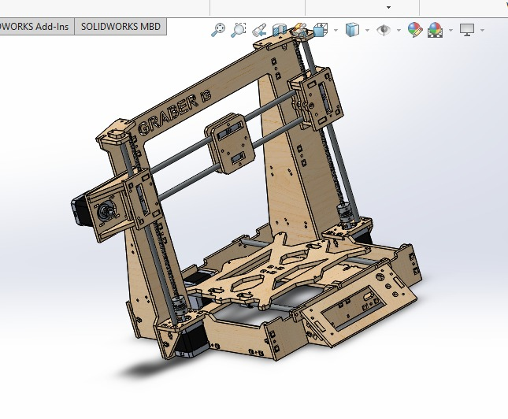 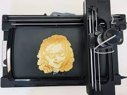
this is the design while the cutting process
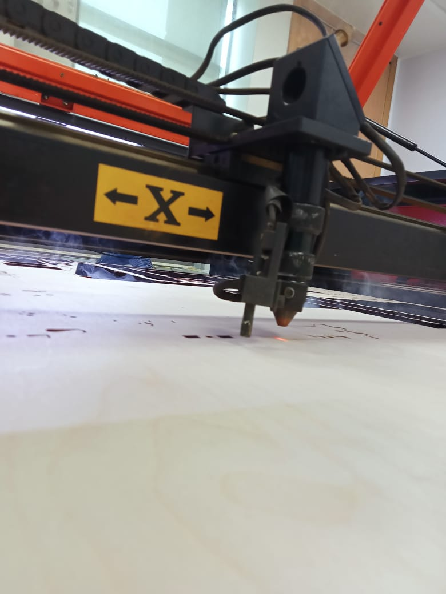
 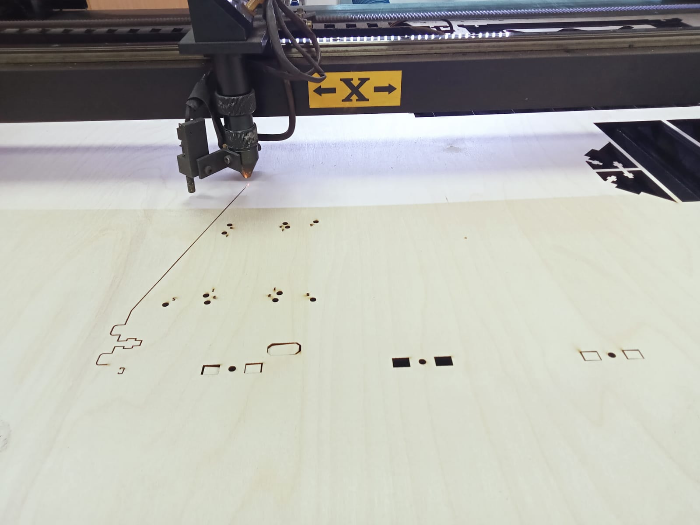
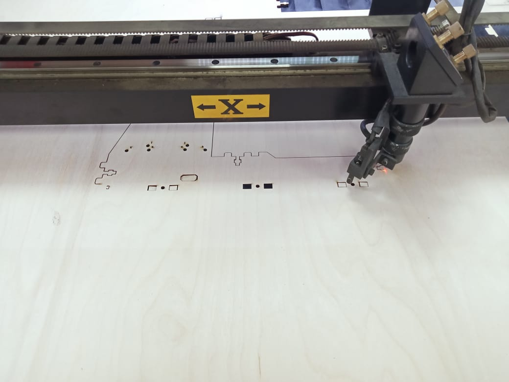
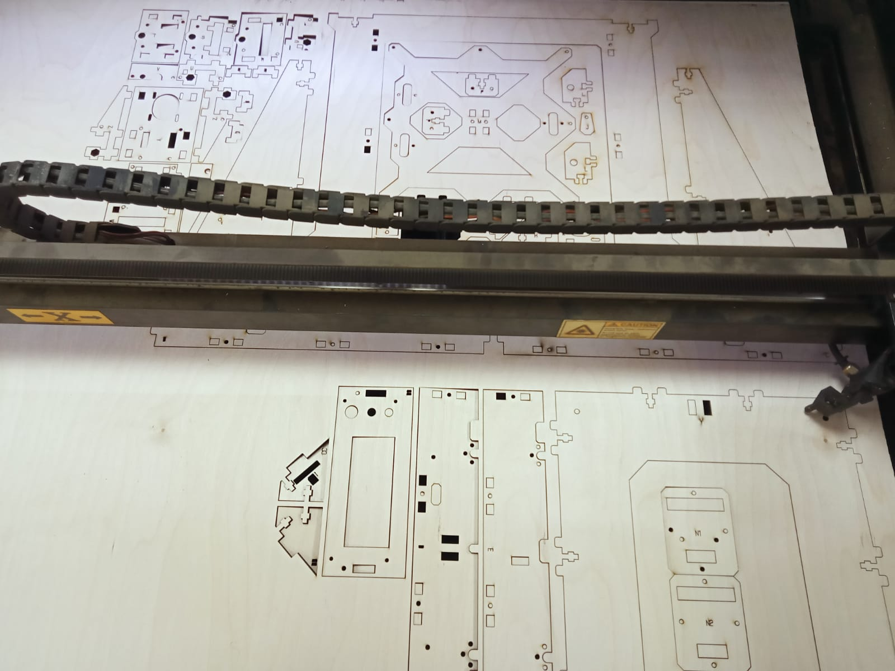
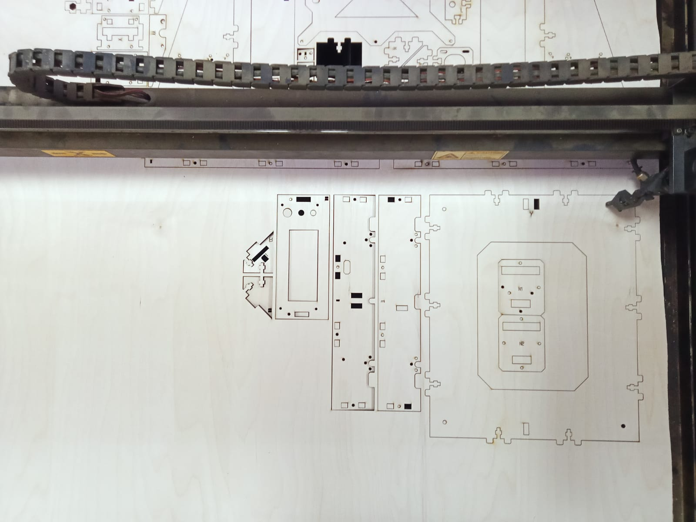
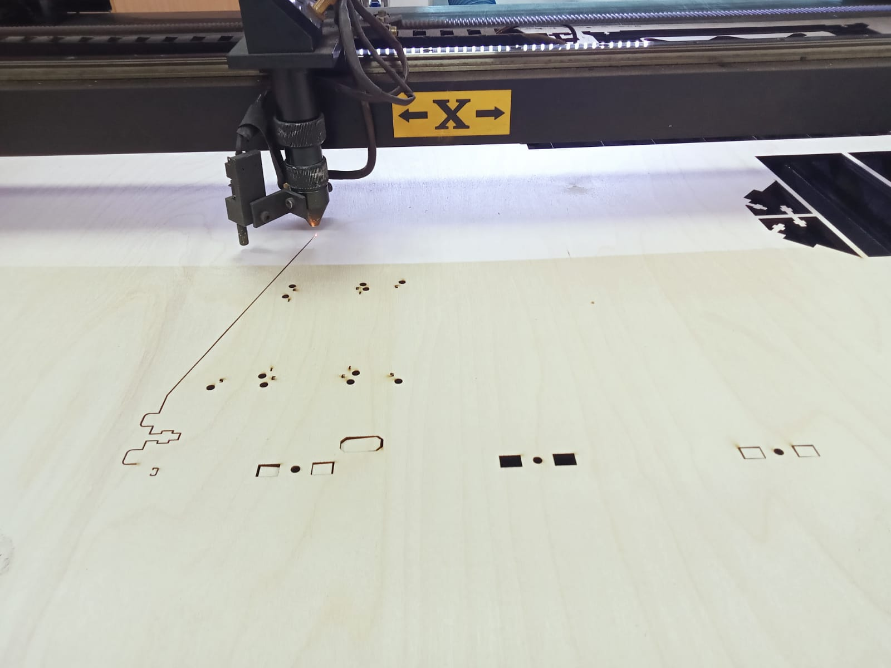
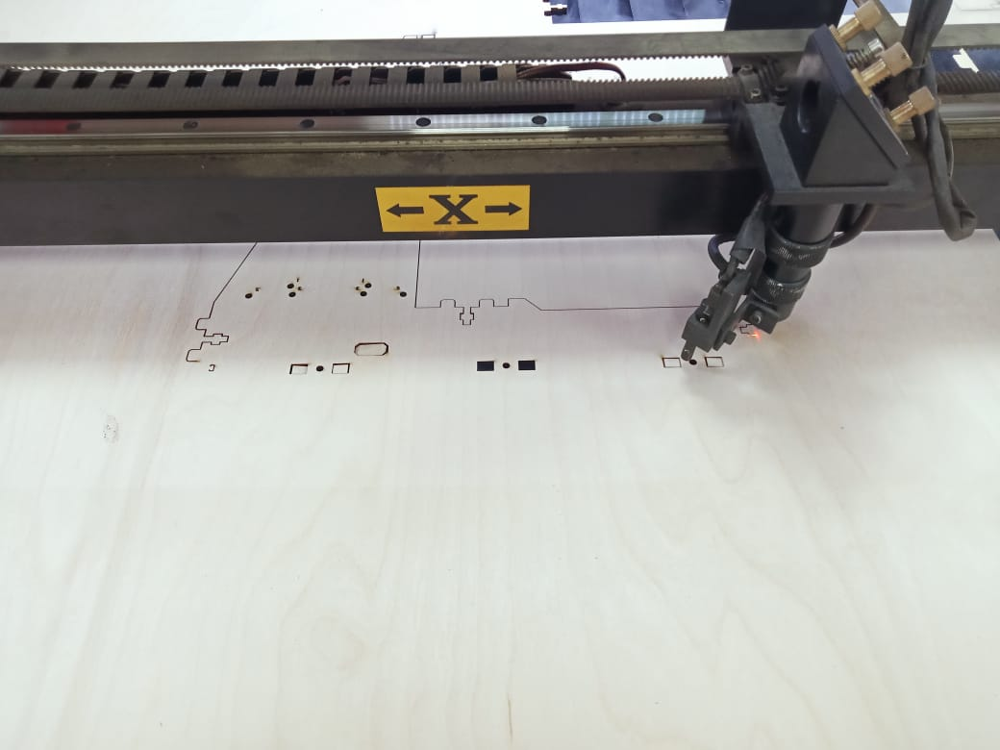
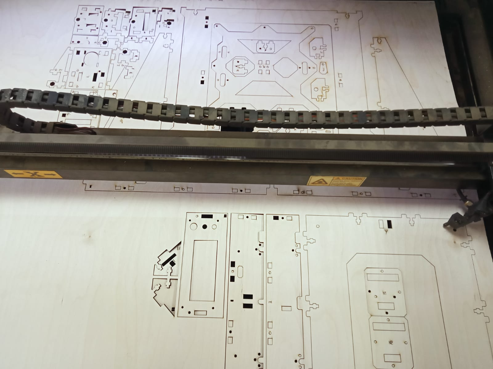
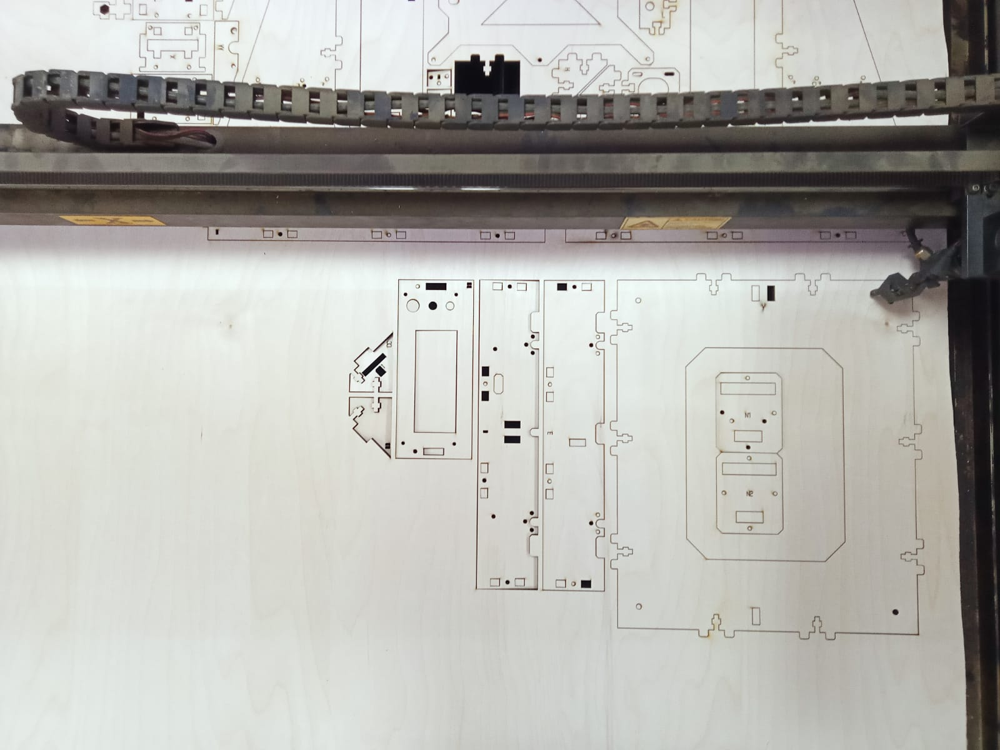
we were working on its assembly listening to " ورده "
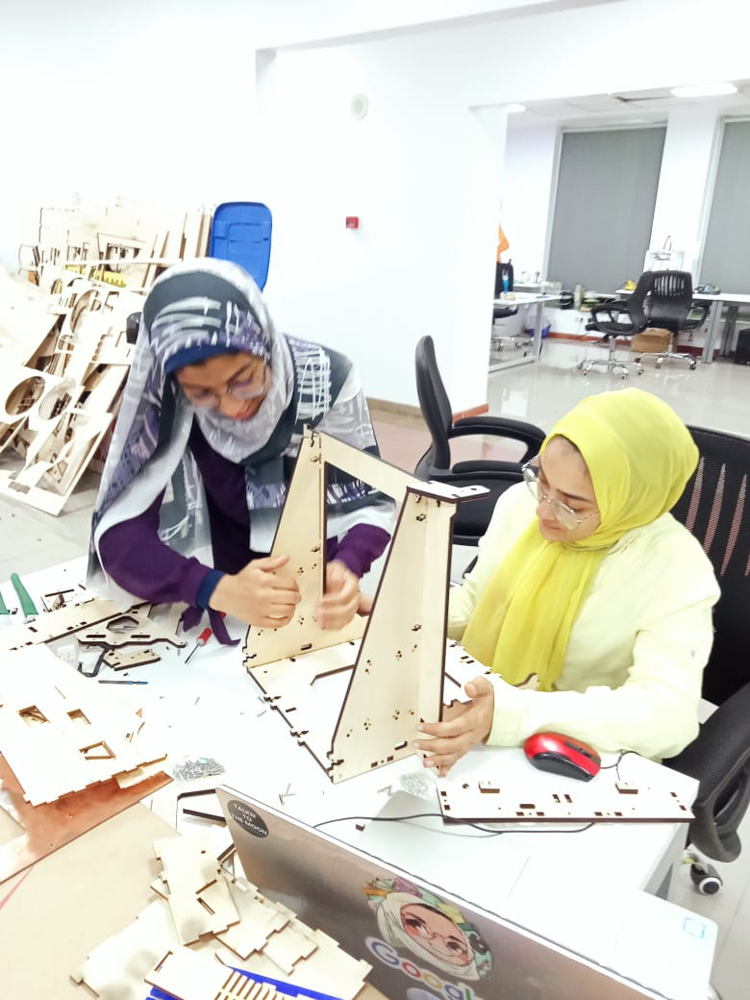 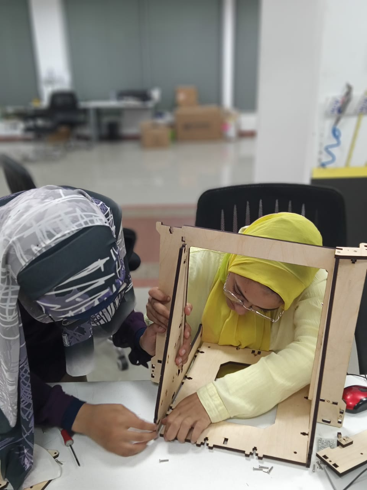
the final assembly
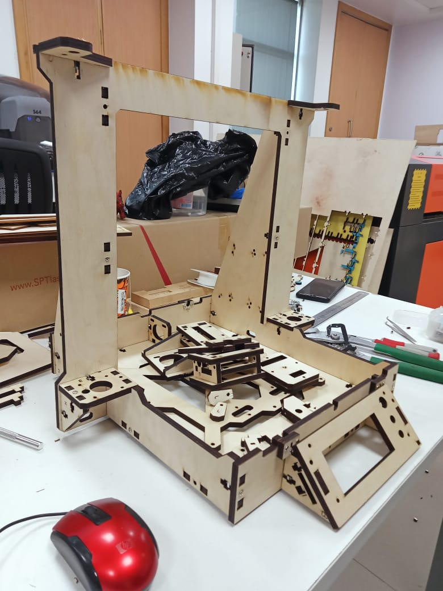 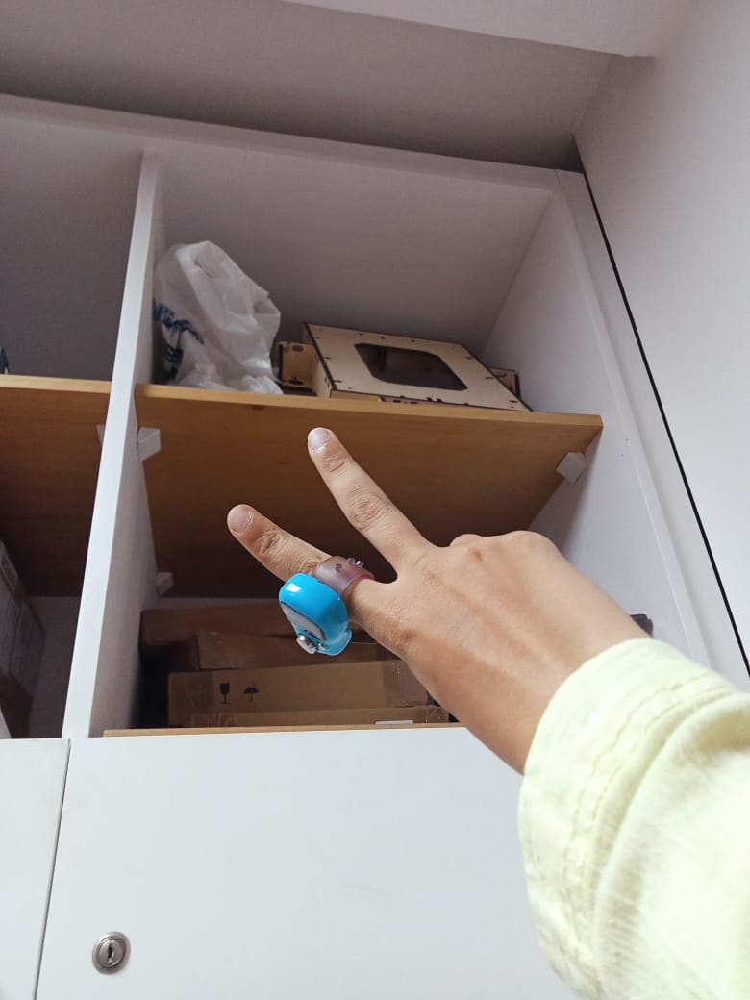
Idea Updating (phase Five)
Eng Ayman has recommended to make a merge between two projects which are: pancake 3d printer and plotter machine because both of them need the same motion axis and the project of the plotter was with the cooperation with our friend Hassan, so we will work on this together
Supported matierials
Visit this link to see the supported files: https://drive.google.com/drive/folders/1XF88zqvCGX8D1uMkNnfuG9_NfyzXbSmL?usp=sharing